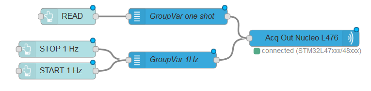
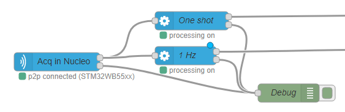

<!--
* module node-red-contrib-stm32cubemonitor
* Copyright(c) 2019 STMicroelectronics
-->
<link rel="stylesheet" href="select2/css/select2.min.css" />
<script src="select2/js/select2.min.js"></script>

<!-- Definition acquisition out node  -->
<script type="text/javascript">
    (function () {
      $.get("jlinkEnabled", function (jlinkEnabled) {
        if (jlinkEnabled == true) {
          let tooltip;
          RED.nodes.registerType('acquisition jlink out', {
            category: "STMicroelectronics",
            color: '#3cb4e6',
            defaults: {
              name: { value: "", required: true },
              probeconfig: { value: "", type: "probejlink" }
            },
            inputs: 1,
            outputs: 0,
            align: 'right',
            icon: "bridge.png",
            label: function () {
              return this.name || "acquisition jlink out";
            },
            paletteLabel: 'acq jlink out',
            oneditprepare: function () {
              tooltip = RED.popover.tooltip($("#node-input-lookup-probeconfig"), "Create a new jlink probe config or modify the selected one")

              $("#node-input-lookup-probeconfig").on("click", () => {
                tooltip.close(true);
              });
              $("#node-input-probeconfig").change(function () {
                if ($("#node-input-probeconfig").val() === "_ADD_") {
                  
                  $("#blink-button-container").hide();
                } else {
                  $("#blink-button-container").show();
                }
              });
            },
          });
        }
      });
    })();
</script>

<script type="text/x-red" data-template-name="acquisition jlink out">
    <div class="form-row node-input-probeconfig">  
        <label for="node-input-probeconfig"><i class="fa fa-random"></i> Probe Config</label>
        <input type="text" id="node-input-probeconfig">
    </div>
    <div class="form-row">
        <label for="node-input-name"><i class="icon-tag"></i> Name</label>
        <input type="text" id="node-input-name" placeholder="Name">
    </div>
</script>

<script type="text/x-red" data-help-name="acquisition jlink out">
    <p>Allow to define and/or select a Jlink probe configuration (probe name), open and close the connection and send commands to the selected probe. </p><br>
    <h3>Properties</h3>
    <dl class="message-properties">
      <dt>Probe Config<span class="property-type">probe configuration</span></dt>
      <dd>This property allows to define and/or select a probe configuration (probe name)</dd>
      <dt>Name<span class="property-type">string</span></dt>
      <dd>Name of the node in the flow, "acquisition out" if empty.</dd>
    </dl><br>
    <h3>Input</h3>
    <p>Each input msg will need a <code>topic</code> and a <code>payload</code> to be processed </p>
    <dl class="message-properties">
        <dt>topic<span class="property-type">string</span></dt>
        <dd>The <code>topic</code> possible values are 
            <ul>
                <li><code>read</code> to send a command of one shot read</li>
                <li><code>start</code> to send a command to START acquisition</li>
                <li><code>stop</code> to send a command to STOP acquisition</li>
              </ul>
        </dd>
        <dt>payload<span class="property-type">object</span></dt>
        <dd>The <code>payload</code> is an object representing the variables group configuration defined in the variables node. The payload
          object holds several properties summarizing what have been set in the configuration panel of the variables node.
          <ul>
            <li><code>groupname</code> string</li>
            <li><code>variablelist</code> array of variable</li>
          </ul>
        </dd>
      </dl><br>
    <h3>Details</h3>
    <p>The acquisition out node is designed to be typically front linked with one or several variables nodes</p>
    
</script>


<!-- Definition acquisition in node  -->
<script type="text/javascript">
  (function () {
      $.get("jlinkEnabled", function (jlinkEnabled) {
        if (jlinkEnabled == true) {
          let tooltip;
          RED.nodes.registerType('acquisition jlink in', {
            category: "STMicroelectronics",
            color: '#3cb4e6',
            defaults: {
              name: { value: "", required: true },
              probeconfig: { value: "", type: "probejlink" }
            },
            inputs: 0,
            outputs: 2,
            align: 'left',
            icon: "bridge.png",
            label: function () {
              return this.name || "acquisition jlink in";
            },
            paletteLabel: 'acq jlink in',
            outputLabels: ["data", "error"],
            oneditprepare: function () {
              tooltip = RED.popover.tooltip($("#node-input-lookup-probeconfig"), "Create a new jlink probe config or modify the selected one");

              $("#node-input-lookup-probeconfig").on("click", () => {
                tooltip.close(true);
              });
            }
          });
        }
      });
    })();
</script>

<script type="text/x-red" data-template-name="acquisition jlink in">
    <div class="form-row node-input-probeconfig">  
        <label for="node-input-probeconfig"><i class="fa fa-random"></i> Probe Config</label>
        <input type="text" id="node-input-probeconfig">
    </div>  
    <div class="form-row">
        <label for="node-input-name"><i class="icon-tag"></i> Name</label>
        <input type="text" id="node-input-name" placeholder="Name">
    </div>
  

</script>

<script type="text/x-red" data-help-name="acquisition jlink in">
    <p>Allow to define and/or select a Jlink probe configuration (probe name), and receive data from the selected probe.</p><br>
    <h3>Properties</h3>
    <dl class="message-properties">
      <dt>Probe Config<span class="property-type">probe configuration</span></dt>
      <dd>This property allows to define and/or select a probe configuration (probe name)</dd>
      <dt>Name<span class="property-type">string</span></dt>
      <dd>Name of the node in the flow, "acquisition in" if empty.</dd>
    </dl><br>
    <h3>Output</h3>
    <p>Two outputs are defined, one port labelled <code>data</code> for the measurement and one labelled <code>error</code> </p>
    <p>The <code>error</code> output <code>msg.payload</code> is the error message string, the <code>msg.topic</code> defines the error level</p>
    <p>The <code>data</code> output <code>msg.payload</code> is an object representing the variable measurements done at specific intervals. </p>
    <dl class="message-properties">
      <dt>payload<span class="property-type">object</span></dt>
      <dd>The payload object holds several properties:
        <ul>
          <li><code>first</code> boolean, true when this is the first measurement after a start.</li>
          <li><code>groupname</code> string, the name of the 'variable group' these measurements are referring to.</li>
          <li><code>data</code> array of array of duplets
            <ul>Each array of duplets is referring to a variable. Each duplet represents the result of a single target memory read.
              <li><code>x</code> number, representing the timestamp</li>
              <li><code>y</code> number, representing the read value in memory target</li>
            </ul>
          </li>
        </ul>
      </dd>
    
    </dl>
    <p>The following example shows an output <code>msg</code> for an acquisition in node:</p>
    <pre>
      {
        "payload": {
          "data": [
            [
              {
                "y": 0,
                "x": 1560850927936
              }
            ],
            [
              {
                "y": 0,
                "x": 1560850927936
              }
            ],
            [
              {
                "y": 463,
                "x": 1560850927936
              }
            ],
            [
              {
                "y": 2048,
                "x": 1560850927936
              }
            ],
            [
              {
                "y": 78,
                "x": 1560850927939
              }
            ]
          ],
          "first": false,
          "groupname": "nv_group2"
        }
      }
    </pre><br>

    <h3>Details</h3>
    <p>The acquisition in node is designed to be typically back linked with one or several processing nodes</p>
    
</script>

<!-- Definition probe config node  -->

<script type="text/x-red" data-template-name="probejlink">
<div class="form-row" id="nickname">
  <label for="node-config-input-nickname"><i class="fa fa-id-card-o"></i> Name</label>
  <input type="text" id="node-config-input-nickname">
</div>

<div class="form-row" id="probeid">
    <label for="node-config-input-probeid"><i class="fa fa-random"></i> Probe Name</label>
    <select class="js-data-example-ajax" type="text" id="node-config-input-probeid"></select>
    <input type="hidden" id="node-config-input-probename">
</div>

<div class="form-row">
  <label for="node-config-input-dllversion"><i class="fa fa-tag"></i> DLL Version</label>
  <input type="text" id="node-config-input-dllversion" placeholder="Name">
</div>

<label for="product-list"><i class="fa fa-tag"></i> MCU model</label>
<select id="product-list">
  <option value="">Select a product</option>
</select>

<div class="form-row" id="mcuname" style="display: inline-block;">
  <input type="text" id="node-config-input-mcuname" placeholder="Name" style="pointer-events: none;">
</div>
</script>

<script type="text/x-red" data-help-name="probejlink">
    <p>Allow to define a probe configuration : probe name and MCU model </p>
    
    <p>If no probe is detected, it may be a driver issue or another software using the probe. 
      Please see the <a target="_blank" href="https://wiki.st.com/stm32mcu/wiki/STM32CubeMonitor:Troubleshooting">wiki</a>
      for more information.</p>
    <br>
    <h3>Properties</h3>
    <dl class="message-properties">
      <dt>Probe Name<span class="property-type">string</span></dt>
      <dd>Allow to select a specific probe among all connected probes </dd>
      <dt>MCU model<span class="property-type">string</span></dt>
      <dd>Allow to select a MCU Model among all MCU Models </dd>
    </dl><br>

</script>


<script type="text/javascript">

  RED.nodes.registerType('probejlink', {
    category: 'config',
    defaults: {
      probeid: { value: "", required: true },
      probename: { value: "", required: true },
      mcuname: { value: "", required: true },
      probeproperty: { value: "", required: false },
      nickname: { value: "", required: false }
    },

    label: function () {
      return this.nickname || this.probename || "probejlink";
    },

    oneditprepare: function () {
      let currentprobelist;
      let currentprobeproperty;
      let currentprobeversion;
      let selectedProductId;
      let selectedMCUBoard;
      const ST_LINK_MIN_VERSION = 2;
      const JTAG_MIN_VERSION = 28;
      const node = this;

      

      if (this.probeid) {
        $('#product-list').val(selectedProductId);
        $("#node-config-input-probeid").append(`<option value=${this.probeid} selected>${this.probename}</option>`);

        // retrieve probe information and update ui
        $.get("getprobejlink", function (data, status, model) {
          currentprobelist = $.map($.makeArray(data.list), function (obj) {
            return obj;
          });

          // Extract jlink information from the probe list
          for (var i = 0; i < currentprobelist.length; i++) {
            var obj = currentprobelist[i];
            var typeprobe = obj.probeName || "";
            if (obj.probeName.includes("jlink")) {
              $("#node-config-input-dllversion").val(obj.DLLversion);
            }
          }

          // build the MCU product list
          var products = $.map(obj.mcuList, function (name, index) {
            return { id: index + 1, name: name };
          });

          $.each(products, function (index, product) {
            $('#product-list').append($('<option>', {
              value: product.id,
              text: product.name
            }));
          });

          // function called When the product-list is changed
          $('#product-list').on('change', function () {
            // Store the ID value of the selected
            var selectedMCUBoardId = parseInt($(this).val());

            // find the "product" corresponding to the one MCU Board selected
            selectedMCUBoard = products.find(function (product) {
              return product.id === selectedMCUBoardId;
            });

            // Store the MCU Board name
            $("#node-config-input-mcuname").val(selectedMCUBoard.name);
            this.mcuname = selectedMCUBoard.name;
          });

          if (currentprobelist) {

            let accurateprobedata = currentprobelist.find(function (e) {
              return (e.id === $("#node-config-input-probeid").val());
            });
            if (accurateprobedata) {
              currentprobeversion = accurateprobedata.version;
            }
          };

        });
      } else {   //if not this.probeid
        $('#product-list').prop('disabled', true); // don't allow to choose the mcu list
        $("#node-config-dialog-ok").button("option", "disabled", true);
      }

      $("#node-config-input-probeid").select2({
        placeholder: "Select a probe",
        minimumResultsForSearch: -1,
        ajax: {
          url: "getprobejlink",
          type: "GET",
          processResults: function (data) {
            currentprobelist = $.map($.makeArray(data.list), function (obj) {
              obj.text = obj.text || obj.probeName;
              obj.id = obj.id || obj.probeId;
              return obj;
            });
            if (!data.updated) {
              RED.notify(node._("Probe list not updated due to acquisition on going"), "warning");
            }
            return { results: currentprobelist };
          }
        }
      });

      $("#probeid>span")[0].style.width = "calc(100% - 110px)";

      //When a new jlink probe is selected
      $("#node-config-input-probeid").change(function (e) {
        
        if (currentprobelist != null) {
          $("#node-config-input-probename").val($("#node-config-input-probeid option:selected").text());
          $("#node-config-input-dllversion").val(currentprobelist[0].DLLversion); // show the ddl version

          var products = $.map(currentprobelist[0].mcuList, function (name, index) {
            return { id: index + 1, name: name };
          });

          $.each(products, function (index, product) {
            $('#product-list').append($('<option>', { // show the mcu list
              value: product.id,
              text: product.name
            }));
          });

          $('#product-list').prop('disabled', false); // allow to select a mcu

          // function called When the product-list is changed
          $('#product-list').on('change', function () {
            // Store the ID value of the selected
            var selectedMCUBoardId = parseInt($(this).val());

            // find the "product" corresponding to the one MCU Board selected
            selectedMCUBoard = products.find(function (product) {
              return product.id === selectedMCUBoardId;
            });

            // Store the MCU Board name
            $("#node-config-input-mcuname").val(selectedMCUBoard.name);
            $("#node-config-input-mcuname").removeClass("input-error");
            this.mcuname = selectedMCUBoard.name;
          });

          currentprobeproperty = currentprobelist.find(function (e) {
            return (e.id === $("#node-config-input-probeid").val());
          }).property;
          $("#node-config-input-probeproperty").val(JSON.stringify(currentprobeproperty));
          currentprobeversion = currentprobelist.find(function (e) {
            return (e.id === $("#node-config-input-probeid").val());
          }).version;
          }
        if (currentprobeproperty != null) {
          $("#node-config-input-protocol").empty();
          $("#node-config-input-protocol").select2({
            minimumResultsForSearch: -1,
            data: Object.keys(currentprobeproperty)
          })


          $("#node-config-dialog-ok").button("option", "disabled", false);
        }
      });
    },
  })
</script>